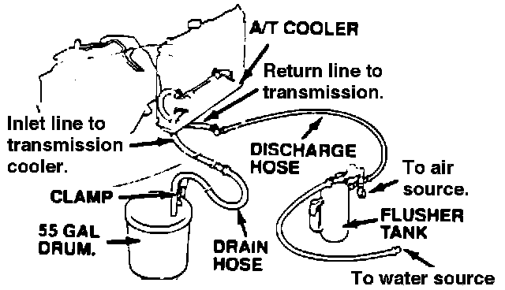
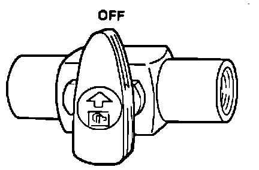
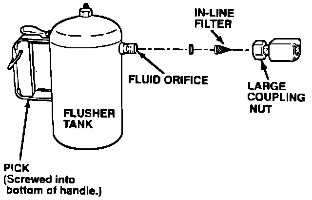

A/T - Cooler Flushing Procedure
July 31, 1989BULLETIN NO. 89-015
YEAR ALL
MODEL ALL
VIN APPLICATION ALL
A/T Cooler Flushing Procedure
When an automatic transmission has been overhauled or is replaced for any reason, the cooler must be flushed to eliminate system contamination.
REQUIRED TOOL INFORMATION
A/T Transmission Cooler Flusher:
J 38405-A
Biodegradable Transmission Cooler Flushing Fluid:
J 35944-20
CORRECTIVE ACTION
Flush the transmission cooling system using the following procedure:
WARNING:
Transmission fluid can cause serious eye injury. Always wear safety glasses or a face shield when using the transmission flusher. For eye and skin contact, flush with water immediately.
1. Check the flusher and hoses for wear or cracks. If found, replace before using.
2. Use the measuring cup and fill the tank with 21 ounces of J35944-20 biodegradable flushing fluid (supplied with tool).
NOTE:
Do not substitute any other fluid and follow the handling procedure on the fluid container.
3. Secure the filler cap and pressurize the tank with 80-120 psi of shop air.
NOTE:
The air hose should be equipped with a water trap to ensure a dry air system.
4. Use the hanger located in front of the water valve and hang the flusher under the car.

5. Using a hose clamp, attach the discharge hose of the flusher tank to the return line of the transmission cooler. See illustration for identification of these hoses.
6. Using a hose clamp, connect the drain hose to the inlet line of the transmission cooler and clamp the other end to an empty 55 gal. drum or floor drain. See illustration for identification of these hoses.

7. With the water and air valves OFF, attach the water and air supply to the flusher (hot water if available).
8. Turn on the flusher's water valve for 10 seconds so water flows through the cooler.
NOTE:
If water does not flow through the cooler it is completely clogged and must be replaced.
9. Depress the flusher's trigger and slip the wire clip over it.
10. While flushing the system for two minutes, every 1 5 to 20 seconds turn on the air valve for five seconds to create a surging action (air pressure max. 120 psi).
11. Turn off the water valve and release the trigger.
12. Reverse the hoses in order to flush in the opposite direction. Then repeat steps 8 through 10.
13. Release the trigger and allow only water to rinse the cooler for one minute.
14. Turn off the water valve and water supply.
15. Turn on the air valve for approximately two minutes or until no moisture is seen coming out of the drain hose.
CAUTION:
Residual moisture in the cooler or pipes can cause damage to the transmission.
16. Remove the flusher from the cooler's inlet line.
17. Attach the drain hose to an oil can.
18. Reinstall the transmission and inlet line and leave the drain hose attached to the cooler.
19. Make sure the transmission is in Park. Then fill the transmission with ATF and run the engine for 30 seconds or until approximately one quart is discharged.
20. Remove the drain hose and reconnect the cooler's return hose to the transmission.
21. Refill the transmission with ATF to the proper level.
22. Clean the flusher using the procedure under TOOL MAINTENANCE.
TOOL MAINTENANCE
1. Fill the tank with water and pressurize it.
2. Depress the trigger and flush the discharge hose. If the discharged water does not foam, then the orifice is blocked.

3. Clean the blocked orifice by disconnecting the plumbing from the tank at the large coupling nut.
4. Remove the in-line filter from the discharge side and clean it necessary.
5. The fluid orifice is located behind the filter; clear it with the pick (screwed into the bottom of the tank handle) or blow with air.
6. Securely reassemble all removed parts.
WARRANTY CLAIM INFORMATION
This bulletin covers technical procedures only. The flat rate time is included in the operations for automatic transmission replacement, overhaul, and exchange. The 1988-89 Flat Rate Manual reflects this change.